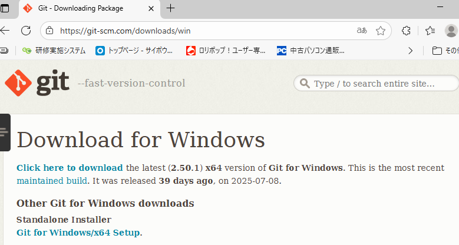

右上にある「Sign up」または「Get started for free」をクリックします。
以下の項目を順番に入力します：
Username（ユーザー名）
→ 公開される名前。URLにも使われます（例：https://github.com/namae123）
Email address（メールアドレス）
→ 有効なメールアドレスを入力
Password（パスワード）
→ 英数字・記号を含む強力なパスワードを設定（※パスワードは忘れないようメモしてください）
簡単なパズルや画像認証が表示されるので、指示に従ってクリアします。
「Free」プランを選択すれば、個人開発には十分です。
登録したメールアドレスに確認メールが届くので、リンクをクリックして認証完了！
ログイン後は、リポジトリ作成やGitHub Pagesの公開など、いろいろな機能が使えます。
、いい流れですね！VS CodeのフォルダをGitHubにプッシュするには、まずGitをインストールしてから、ローカルフォルダをGitHubリポジトリに接続する必要があります。以下に完全ステップガイドをまとめました👇
公式サイトへアクセス
🔗 https://git-scm.com/
「Download for Windows」をクリック

インストーラーを実行 → 基本は「Next」連打でOK
※「Git Bash」も一緒にインストールされます（便利です）
インストール完了後、VS Codeを再起動
VS Codeで対象フォルダを開く
ターミナルを開く（Ctrl + Shift + ~）
以下のコマンドを順番に入力：
git init
→ フォルダがGit管理されます
git add .
→ すべてのファイルをステージング
git commit -m "初回コミット"
→ コミット（保存）
my-project）GitHubで作成したリポジトリ画面に表示される「HTTPS URL」を使います（例：https://github.com/namae123/my-project.git）
VS Codeのターミナルで以下を実行：
git remote add origin https://github.com/ユーザー名/リポジトリ名.git
git branch -M main
git push -u origin main
GitHub上にVS Codeのフォルダ内容がアップロードされます。
ブラウザでリポジトリを開くと、ファイル一覧が表示されているはずです！
.gitignore を使えば、アップロードしたくないファイルを除外できますindex.html をルート(フォルダ直下)に置いておくと便利です、ここまで来たらもう一息ですね！
GitHubにプッシュしたHTMLファイルを外部公開（Webサイトとして表示）するには、GitHub Pagesを使います。以下に、完全ステップガイドをまとめました👇
index.htmlがあるとベスト）GitHubで対象リポジトリを開く
例：https://github.com/mitsuru123/mypage
上部メニューから「Settings」をクリック
左側メニューから「Pages」を選択
※「Code and automation」セクションの中にあります
「Source」で以下を設定：
main/ (root)（または /docs フォルダでも可）「Save」ボタンをクリック
設定後、数秒〜数分で、ウェブ画面を更新すると以下のような表示が出ます：
Your site is published at:
https://namae123.github.io/mypage/
index.html にすると、URL直打ちで表示されますgit add . → git commit → git push でOKmypage/
├── index.html
├── style.css
├── script.js
└── images/
└── logo.png
この構成をそのままGitHubにプッシュすれば、見栄えの良いWebページが公開されます✨
VS CodeでGitHubにプッシュ済みのリポジトリに対して、ファイルを更新 → 再プッシュする流れを、わかりやすくステップでご案内します👇
VS Codeで対象のファイル（例：index.htmlやstyle.cssなど）を編集し、保存します。
ターミナルを開いて（Ctrl + Shift + ~）、以下を実行：
git status
→ 変更されたファイルが赤字で表示されます。
git add .
→ すべての変更をステージング（＝「準備OK」にする）
※特定ファイルだけの場合は git add ファイル名 でもOK
git commit -m "更新内容の説明（例：HTMLのタイトル変更）"
→ 変更内容を記録します。メッセージは後で見返すためにも、簡潔に書くのがおすすめです。
git push
→ GitHubに変更を反映！
すでに origin と main が設定されていれば、これだけでOKです。
GitHub上のリポジトリに、更新されたファイルが反映されます。
もしGitHub Pagesで公開している場合は、数秒〜数分でWebページも更新されます✨
git log で過去のコミット履歴を確認できますgit diff で変更点を比較できます（コミット前に便利）以上です。